Bild des Abschlusses unter stetigen Abbildungen
1. Satz
Seien  und
und  topologische Räume und
topologische Räume und  eine Abbildung.
Dann sind folgende Aussagen äquivalent:
eine Abbildung.
Dann sind folgende Aussagen äquivalent:
 gilt: 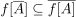 (siehe:
gilt: 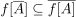 (siehe: 2. Beweis
2.1. a) stetig 
Beweis durch Widerspruch:
Sei  stetig aber das Kriterium ist verletzt:
D.h. es existiert eine Menge 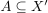 mit , so dass gilt:
stetig aber das Kriterium ist verletzt:
D.h. es existiert eine Menge 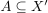 mit , so dass gilt:
Da Abschluss abgeschlossen ist, folgt dass  offen ist und damit eine Umgebung von
offen ist und damit eine Umgebung von  Dabei ist aber 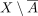 offen mit 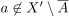.
Damit folgt, dass das Urbild keine Umgebung ist, d.h. Urbilder von Umgebungen unter stetigen Abbildungen ist verletzt
Dabei ist aber 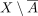 offen mit 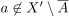.
Damit folgt, dass das Urbild keine Umgebung ist, d.h. Urbilder von Umgebungen unter stetigen Abbildungen ist verletzt
2.2. b) stetig
Beweis durch Widerspruch:
Sei nicht stetig, so existiert nach der Aussage über das Urbild einer abgeschlossene Mengen unter stetigen Abbildungen eine abgeschlossene Menge 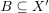, so dass  nicht abgeschlossen ist.
Da
nicht abgeschlossen ist.
Da  nach Annahme abgeschlossen ist, gilt
nach Annahme abgeschlossen ist, gilt  (siehe: Abschluss als kleinste abgeschlossene Menge)
(siehe: Abschluss als kleinste abgeschlossene Menge)
Wegen des Abschluss als abgeschlossene Menge und des Abschluss als Obermenge gilt auch für die nicht abgeschlossene Menge 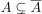, d.h. 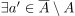 mit 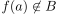 Daraus folgt aber der Widerspruch zur Annahme, da gilt:
2.3. komische richtung
Da der Abschluss abgeschlossen ist (vgl. Abschluss als abgeschlossene Menge) folgt wegen der Stetigkeit, dass und zudem auch noch die die kleinste abgeschlossene Menge ist folgt,
abgeschlossen ist.
Desweiteren gilt, dass (vgl. Abschluss als Obermenge) und damit auch 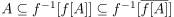
Wegen dem Abschluss als kleinste abgeschlossene Menge folgt daraus 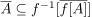, so dass insgesamt durch Auswertung mit folgt: